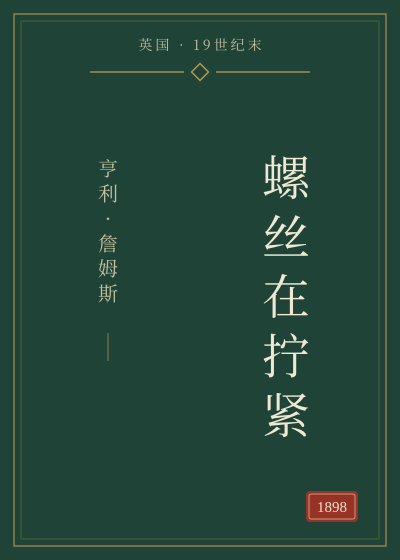
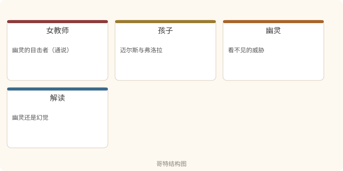

螺丝在拧紧
一、基本信息
| 作者 | 亨利·詹姆斯 |
|---|---|
| 成书/出版 | 1898年（作者页B297口径：The Turn of the Screw (1898)——'best remembered'） Henry James (American writer) — Encyclopaedia Britannica（百科全书） |
| 国别/地区 | 英国 |
| 时代 | 现当代 · 19世纪末 |
| 体裁 | 中篇小说 |
| 语言 | 英语 |

哥特结构图（主题·结构图）
二、创作背景
Britannica（B297）：'Today he is best remembered as the author of the novel The Portrait of a Lady (1881) and the novella The Turn of the Screw (1898).'（B297）。
作者（B297）：'a key transitional figure between literary realism and Modernism'。
题材（通说待核）：家庭女教师与两个孩子的幽灵故事——'被污染的'哥特叙事。
三、内容脉络
女教师的幽灵见闻：'看不见的'恐惧（通说待核）。
四、主要人物表
| 人物 | 身份 | 说明 |
|---|---|---|
| 女教师 | 家庭教师 | （通说待核） |
| 迈尔斯与弗洛拉 | 孩子 | （通说待核） |
五、主题与艺术特点
- '幽灵'与'心理'的双重解读（通说待核）。
- 不可靠叙述（通说待核）。
- 哥特与心理的融合（通说）。
六、影响与评论
- Britannica：'best remembered as the author of……The Turn of the Screw (1898)'（B297）。
Henry James (American writer) — Encyclopaedia Britannica（百科全书） - 作者页：'key transitional figure between literary realism and Modernism'（B297 作者级）。
Henry James (American writer) — Encyclopaedia Britannica（百科全书）
七、阅读建议
难点
- '幽灵'还是'幻觉'的解读。
- 叙事框套。
- 《螺丝在拧紧》（人民文学出版社/上海译文版本，通说待核）。
- 英文原版（公有领域）。
亨利·詹姆斯哥特之作。
八、待核实
- 1898年出版（Macmillan说）核对。
- 女教师/迈尔斯/弗洛拉人名核对。
- '幽灵还是幻觉'的学术争论待核。
本页主要来源
亨利·詹姆斯的其他收录作品：一位女士的画像